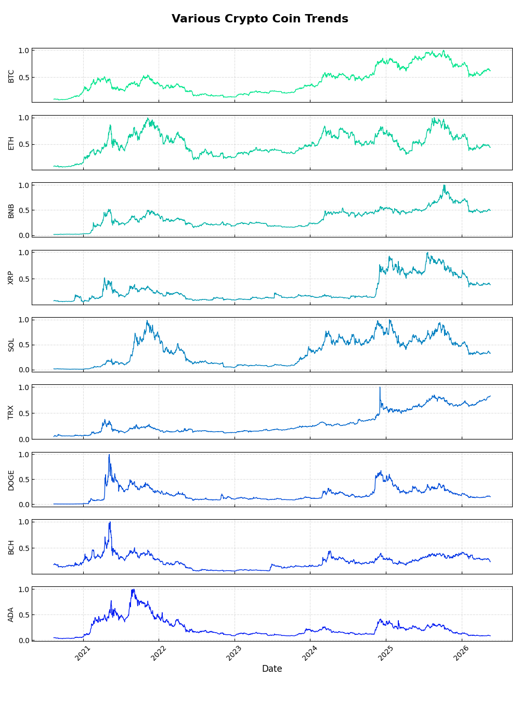
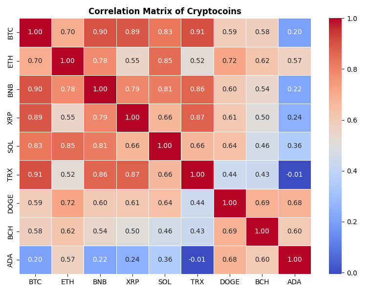
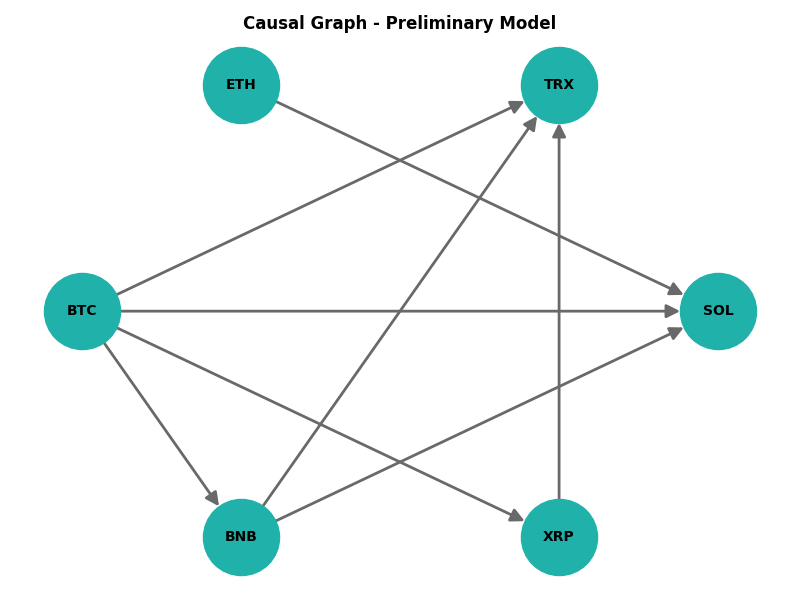
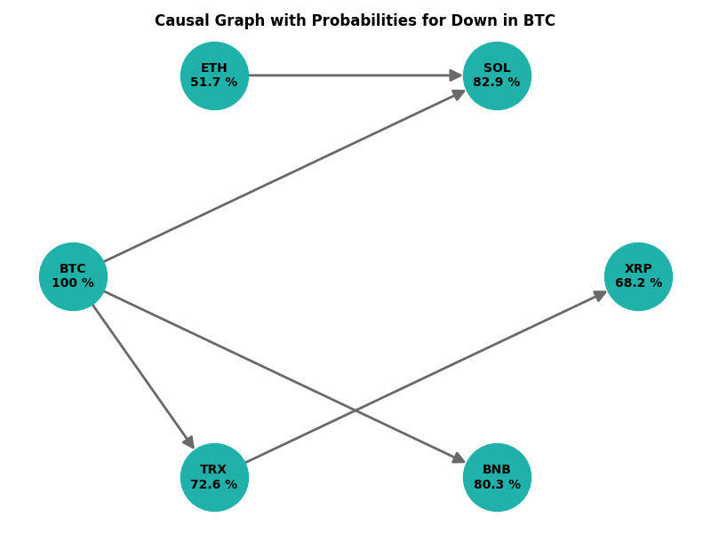
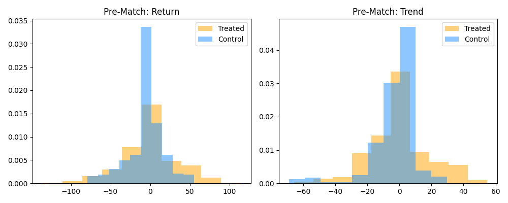

CausCrypto Project
The first project is dedicated primarily to causal inference. Correlations are pervasive across many domains of everyday life, yet establishing a causal relationship is not immediately evident. For this study I employ datasets drawn from the cryptocurrency ecosystem. In recent years Bitcoin has surged in popularity and is widely regarded as a digital store of value, although it does not function as an official currency. Cryptocurrencies remain highly speculative assets. The data are openly available for download at cryptodatadownload.
Bitcoin was one of the earliest cryptocurrencies to introduce decentralization, and it is complemented by numerous altcoins (alternative coins) that utilize distinct consensus mechanisms and technologies. These altcoins typically possess lower market capitalizations and exhibit distinct price‑dynamic patterns. The central research question is whether a causal link exists between the price dynamics of Bitcoin and those of the altcoins.
The dataset consists of OHLCV (Open, High, Close, Low, Volume) information stored as CSV files. The accompanying source code is hosted on GitHub and incorporates a logger that outputs detailed information during execution.
For the purpose of comparison, the stablecoin USDT (Tether) is used as a reference. USDT is pegged to the U.S. dollar and therefore exhibits only minimal price fluctuations, rendering its impact negligible for the analyses presented.
Each time‑series includes both a calendar date and a UNIX timestamp. The series span heterogeneous periods, with Bitcoin data covering the longest timeframe. Because the price trajectories differ substantially across assets, the (Close) tagged data have been normalized to a 0–1 range, enabling direct visual and quantitative comparison of trend curves.
Cryptocurrencies demonstrate markedly higher volatility than traditional assets such as equities or precious metals (e.g., gold). To assess the stationarity of the series, I applied the ADF test (Augmented Dickey‑Fuller). As anticipated, the majority of coins are non‑stationary. The DOGE coin stands out with the lowest test statistic and a p‑value below the 5 % threshold, indicating statistical evidence of stationarity. All other assets exhibit a significant positive price drift over the examined period. The corresponding trend curves are illustrated in the accompanying figures.

We assume that Bitcoin’s price influences the prices of the other altcoins: when Bitcoin rises, the altcoins tend to rise as well, and when Bitcoin falls, the altcoins tend to fall. The prevailing market sentiment across all cryptocurrencies would therefore be reflected in this common price movement.
To test for possible correlations, we can compare the individual values of the nine cryptocurrencies with the highest market capitalizations on the same dates. This comparison is performed by calculating the Pearson correlation coefficient. A coefficient close to 1 indicates a nearly perfect alignment of the observed trends, while a negative value signifies an inverse relationship. A value of 0 denotes the absence of a linear correlation.
The analysis is based on the nine cryptocurrencies with the largest market capitalizations, ranked as follows: Bitcoin (BTC) at the top, followed by Ethereum (ETH), and ending with Cardano (ADA). The Pearson coefficients are presented in a correlation matrix. High values are highlighted in red, whereas low correlations below 0.5 are shown in blue.

There is no quantifiable metric for market sentiment in the cryptocurrency space. Consequently, we can only compare the cryptocurrencies relative to each other. Because Bitcoin (BTC) holds the highest market capitalisation, I use it as the reference point and express all other assets in relation to Bitcoin. Notably, Ethereum (ETH), ranked second, exhibits a Pearson correlation of only 0.7 with Bitcoin in terms of trading volume, allowing it to be treated as an independent covariable in this analysis. The remaining coefficients — e.g., for Tron (TRX), Binance Coin (BNB), Ripple (XRP) and Solana (SOL) — are markedly higher, hovering around 0.9. By establishing a minimum correlation threshold of 0.8, only a few covariates remain relevant. These relationships can be visualised in a directed acyclic graph. Based on the Pearson coefficients, the following graph can serve as the starting point.

First of all, we can evaluate the degree to which Bitcoin’s price trend influences other altcoins. By employing a Bayesian network, we can calculate the probability that a decline in Bitcoin corresponds to declines in the other cryptocurrencies. To determine whether a cryptocurrency is rising or falling, I refer to the closing values — i.e., the prices at the end of each trading day. The difference between a day’s closing price and the previous day’s closing price indicates a rise (positive change = Up) or a fall (negative change = Down). Down is encoded as 0 and an Up as 1, and I computed these binary indicators for each cryptocurrency. Finally, all calculations are performed under the assumption that Bitcoin is Down.
Why a Bayesian Network. My intention was to use this script to create a probabilistic causal model that links the observable market variables (price, volatility, RSI, etc.) to a latent “market‑state” that drives the up‑or‑down movement of a coin. A full‑blown structural‑equation model would be over‑kill, so we can build a hand‑crafted DAG (Directed Acyclic Graph) that reflects the intuition that: Bitcoin acts as reference or “market leader”. Other coins tend to follow BTC’s direction, but the strength of that dependence varies per coin. Volatility and RSI act as mediators – they are influenced by the same underlying market pressure that also moves the price.
The BN therefore lets us compute a posterior probability that a coin will be “up” (price increase) given its current observable features. Initially, the structure of the BN was defined, given by the correlation matrix including the threshold value of 0.8. The resulting graph is acyclic by construction. BTC and ETH acts as parents, so each nodes are listed. For implementation of the BN the pomegranate package was used to factorize the joint distributions as a product of conditional distributions. For each node a conditional probability table was provided as an initial starting point.
Why it was done manually? The graph is small with around 6 nodes and the relationships are well‑understood, so we can hand‑craft plausible CPTs without needing a data‑driven structure‑learning step (which would be noisy on crypto data). Manually specifying the CPTs also guarantees that the BN is deterministic across runs – important for reproducibility in a research pipeline. The exact inference algorithm fits the data and computes the posterior distribution P(Down | Parents). The resulting model object can be queried for the probability that a coin will be "Down" given its current feature values. The posterior probabilities are then plotted below to show how likely each coin is to move down under the current market conditions.

For a straightforward momentum strategy in cryptocurrency trading, a simple rule can be applied. As long as the price is rising, a long position can be taken with the expectation that the price will continue to appreciate, allowing a later sale to realize a profit. To reduce the influence of volatility on the assessment, a 30‑day simple moving average may be employed. This clearly indicates whether the cryptocurrency’s price is trending upward or downward. When the price is falling, a loss is incurred, and the longer the decline persists, the greater the loss. The question then arises: if the signal from BTC is transferred to, for example, SOL, can a profit also be realized?
In this section I want to evaluate the causal effect (e.g., "does a price-trend signal improve returns?"). We face a classical confounding problem: As the Treated group are coins that exhibit the momentum signal (e.g., price moving together with BTC). For the Control group we have coins that don't exhibit that signal. If the two groups differ in other respects (market-cap, volatility, liquidity, etc.), any observed difference in outcomes could simply be due to those other factors, not the signal itself. A propensity score is the estimated probability that a coin belongs to the treated group, conditional on its observable covariates. By construction: The propensity score balances the covariates between treated and control units in expectation. After matching on the score, the distribution of covariates should be similar in the two groups, allowing a fair comparison of outcomes.
We would like to model the "Treated" group and the "Control". For this purpose I select the logistic regression based on the features Close, Volume, RSI, etc.. obtaining 1 for "Treated" and 0 for the "Control". The resulting probability is here the prospensity score. The goal is to create pairs between "Treated" and "Control" that are very similar in terms of the propensity score. The idea is to keep the covariate balance while discarding control units that have no suitable treated counterpart and vice-versa. The introduction of a caliper allows a maximum difference in the propensity score between a treated unit and a matched control. Smaller results in stricter matching but with fewer pairs. For matching I use the Nearest Neighbor algorithm. This methodology is simple and uses only scikit-learn and avoids additional software packages.
After we have a matched sample (treated rows ↔ control rows), we can compute the average treatment effect for any outcome variable. In our case this could be the "Return" or "Trend" (binary direction of the price change). Because we have a finite matched set, the ATE estimate itself has sampling variability. Therefore, the matched pairs are resampled with 10 000 times. For each bootstrap iteration it computes the ATE on the bootstrapped matched sample. The distribution of these 10 000 ATE values is summarized as mean, confidence interval. The bootstrap is non-parametric, making no assumptions about the underlying distribution of the outcome. As it was mentioned the distributions of the two investigated covariates Trend and Return should match in the center. The ATE for the return is 0.2811 +/- 39.7815 [CI -90.65, 88.62] and for the trend -0.1117 +/- 18.1479 [CI -43.4982, 37.8697]. The return increases slightly for SOL using the trend signal from BTC. The bar charts are visualized as below:

GitHub: github.com/markus-schindler/CausCrypto